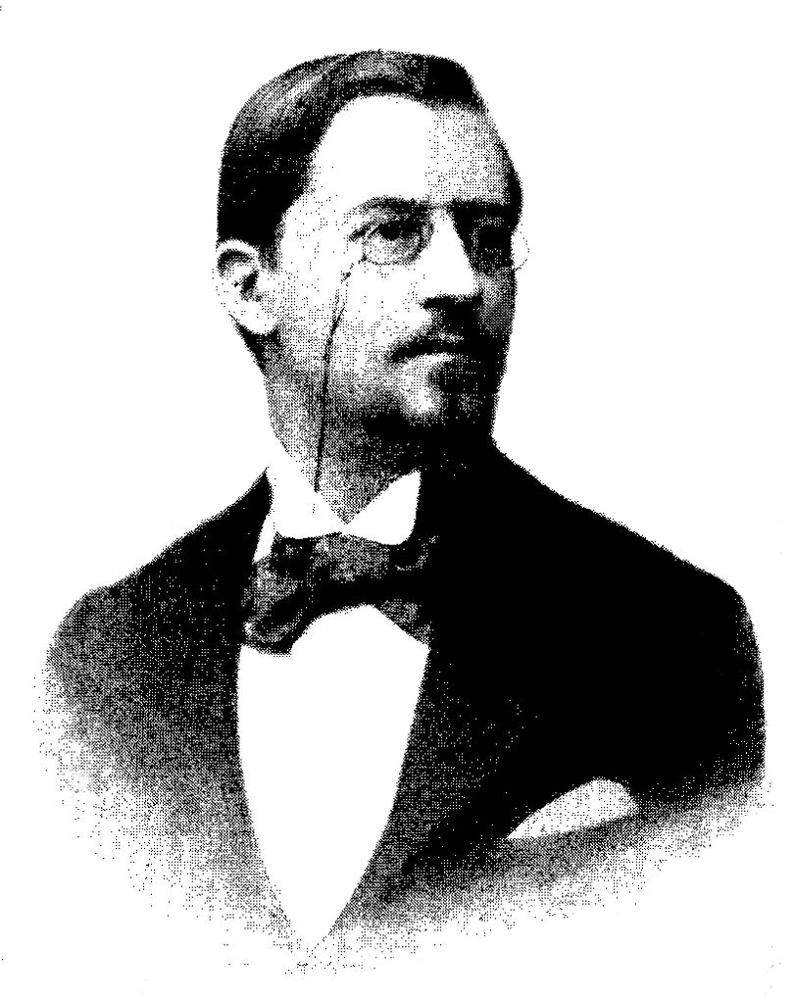
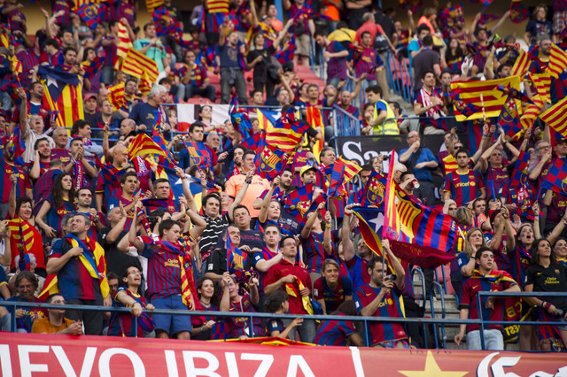

Sejarah
Pada tahun 1898, Hans Gamper, yang kemudian dikenal sebagai Joan Gamper, tiba di Barcelona untuk alasan profesional. Dia bermain sepak bola bersama rekan-rekannya di lapangan di Bonanova, yang kemudian menjadi markas pertama
Barcelona, pada waktu senggangnya.
Pada 22 Oktober 1899, Gamper memasang sebuah iklan di majalah Los Deportes untuk menemukan para pemain yang tertarik untuk membentuk sebuah tim sepak bola. Hasilnya, pada 29 November, Gamper dan sebelas pemain lainnya (Otto
Kunzle dan Walter Wild dari Swiss; John Parsons dan William Parsons dari Inggris; Otto Maier dari Jerman; Lluís d’Ossó, Bartomeu Terradas, Enric Ducal, Pere Cabot, Carles Pujol dan Josep Llobet dari Katalan) berkumpul di Solé
Gymnasium untuk mendirikan Futbol Club Barcelona.Walter Wild kemudian ditunjuk sebagai presiden pertama klub

Walter Wild mendapat kehormatan menjadi presiden pertama FC Barcelona (1899–1901).
Pendukung
Julukan cules untuk pendukung Barcelona berasal dari cul Katalan (bahasa Inggris: ass), sebagai penonton di stadion pertama, Camp de la Industria, duduk dengan culs mereka atas berdiri. di Spanyol, sekitar 25% dari populasi
dikatakan Barca simpatisan, kedua di belakang Real Madrid, didukung oleh 32% dari populasi. Sepanjang Eropa, Barcelona adalah favorit klub pilihan kedua . Jumlah keanggotaan klub ini telah melihat peningkatan yang signifikan
dari 100.000 pada musim 2003-04 menjadi 170.000 pada bulan September 2009, kenaikan tajam yang disebabkan oleh pengaruh Ronaldinho dan strategi media kemudian presiden Joan Laporta yang berfokus pada Spanyol dan Inggris media
online.
Selain keanggotaan, per Juni 2010 ada 1.335 klub penggemar resmi terdaftar, disebut penyes, di seluruh dunia. Klub-klub penggemar mempromosikan Barcelona di wilayah mereka dan menerima penawaran bermanfaat ketika mengunjungi
Barcelona. Klub ini telah memiliki banyak orang terkemuka di antara para pendukungnya, termasuk Paus Yohanes Paulus II, yang adalah anggota kehormatan, dan mantan perdana menteri Spanyol José Luis Rodríguez Zapatero. FC
Barcelona memiliki kedua rata-rata kehadiran tertinggi klub sepak bola Eropa hanya di belakang Borussia Dortmund.

Penggemar Club Sepakbola FC Barcelona
Rivalitas klub
Dalam sebuah liga nasional di suatu negara, sering terdapat persaingan sengit antara dua tim terkuat, dan ini terutama terjadi di La Liga, di mana pertandingan antara Real Madrid dan Barcelona dikenal sebagai "Pertemuan Klasik"
(El Clásico). Sejak awal kompetisi nasional dimulai, kedua klub sering dipandang sebagai pencerminan/wakil dari dua daerah berbeda di Spanyol: Catalunya dan Castilla, serta dari dua kota. Persaingan ini mencerminkan berbagai
hal, termasuk ketegangan politik dan budaya antara Catalunya dan Castilla yang merupakan gambaran umum dari Perang Saudara Spanyol.

Lionel Messi dan Cristiano Ronaldo